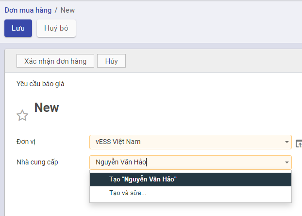
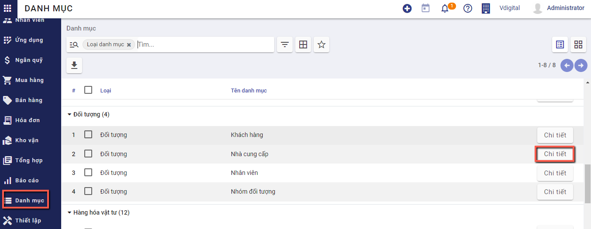
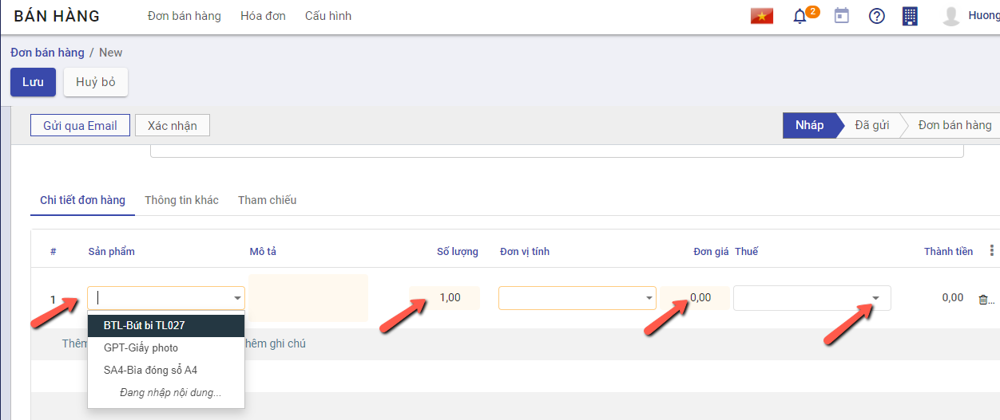
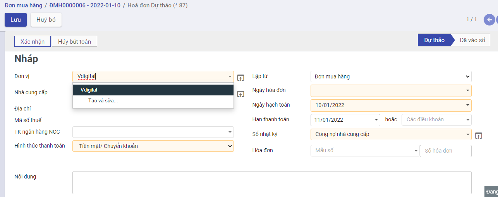
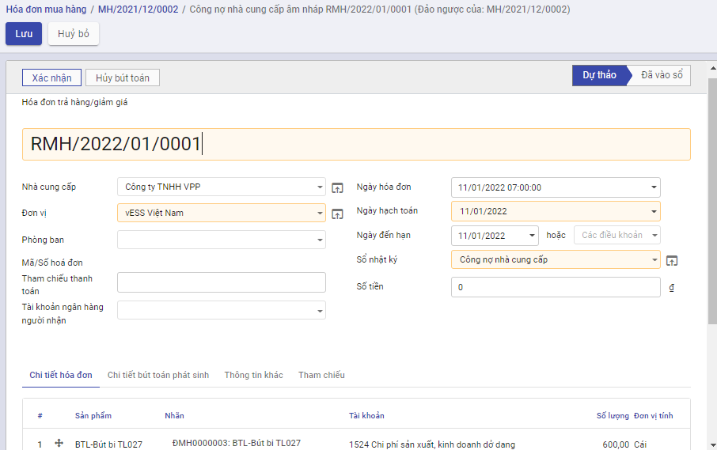

Quy trình nghiệp vụ
Quản lý toàn bộ quy trình Mua hàng: Từ Đơn hàng, Hóa đơn mua hàng và Hóa đơn trả hàng. Đồng thời theo dõi thanh toán hóa đơn và cấn trừ công nợ với nhà cung cấp, lên báo cáo mua hàng và báo cáo kế toán liên quan.
Quy trình

Các luồng quy trình
· Lập đơn mua hàng gửi Nhà cung cấp. Chi tiết nghiệp vụ tại đây
· Nhập kho đơn mua hàng. Chi tiết nghiệp vụ tại đây
· Tạo hóa đơn mua hàng. Chi tiết nghiệp vụ tại đây
· Ghi nhận thanh toán từ nhà cung cấp. Chi tiết nghiệp vụ tại đây
· Tạo hóa đơn giảm giá/trả hàng. Chi tiết nghiệp vụ tại đây
Đơn mua hàng
Mô tả nghiệp vụ
Khi đơn vị có nhu cầu mua hàng, lập yêu cầu mua hàng thì quy trình thực hiện như sau:
- Sau khi lựa chọn và chốt giá cả với Nhà cung cấp được lựa chọn: người mua hàng thực hiện lập đơn mua hàng theo thỏa thuận với nhà cung cấp để chốt lại hàng hóa, số lượng, giá cả, hạn thanh toán, hạn giao hàng, địa điểm giao hàng....
- Sau khi lập xong đơn hàng, người mua chuyển đơn mua hàng cho nhà cung cấp để nhà cung cấp kiểm tra, ký đơn mua hàng.Người mua thực hiện xác nhận đơn hàng và lưu trữ chứng từ.
- Đơn mua hàng có thể được lập mới từ đầu hoặc được lập từ: đơn bán hàng
Luồng chức năng chính
· Lập đơn mua hàng gửi Nhà cung cấp. Chi tiết nghiệp vụ tại đây
· Xác nhận Đơn hàng từ Nhà cung cấp. Chi tiết nghiệp vụ tại đây
Xem video hướng dẫn
Hướng dẫn trên phần mềm
Lập đơn mua hàng gửi Nhà cung cấp
Đối tượng thực hiện : Nhân viên bộ phận mua hàng
Bước 1: Vào phân hệ Mua hàng, Chọn Đơn mua hàng
Hoặc thực hiện Tìm kiếm trực tiếp chức năng trên ô tìm kiếm chung của hệ thống

Bước 2: Nhấn nút Tạo  trên chức năng để thực hiện thêm một đơn hàng mới. Khai báo các thông tin chi tiết trên đơn mua hàng. Lưu ý: Các ô màu hồng là những thông tin cần bắt buộc nhập
trên chức năng để thực hiện thêm một đơn hàng mới. Khai báo các thông tin chi tiết trên đơn mua hàng. Lưu ý: Các ô màu hồng là những thông tin cần bắt buộc nhập

-
Chọn đơn vị cần mua hàng.
-
Chọn thông tin Nhà cung cấp. Nếu chưa có nhà cung cấp thì có thể nhập bổ sung thêm bằng cách nhập tên nhà cung cấp và chọn tạo mới

hoặc vào đường dẫn Danh mục/Nhà cung cấp và thực hiện thêm mới

-
Khai báo thông tin về Hạn đặt hàng, Ngày đơn hàng, nội dung chi tiết đơn hàng
-
Khai báo thêm thông tin về Sản phẩm/dịch vụ tại chi tiết đơn hàng bằng cách nhấn chọn thêm sản phẩm
-
Chọn các sản phẩm yêu cầu báo giá từ nhà cung cấp
- Nhập thông tin Số lượng, Đơn giá, Chiết khấu và mức Thuế đối với từng Sản phẩm
- 
- Khi thực hiện Thêm ghi chú --> Thông tin nội dung sẽ được in trên file gửi nhà cung cấp
Bước 3: Nhấn Lưu
Thực hiện gửi đơn hàng cho nhà cung cấp
Bước 1: Sau khi đã có đơn hàng để gửi khách hàng, Thực hiện In đơn hàng bằng cách chọn chức năng In

Bước 2: Thực hiện Gửi qua Email đến nhà cung cấp sau khi hoàn thành đơn hàng, có thể tùy chỉnh thông tin mẫu gửi báo giá theo yêu cầu

Xác nhận Đơn hàng từ Nhà cung cấp
Tại đơn hàng đã tạo, sau khi đã thỏa thuận được báo giá với nhà cung cấp và nhà cung cấp trả hàng theo đúng yêu cầu, người mua hàng nhấn nút Xác nhận để hoàn thành đơn hàng
Nếu không còn nhu cầu mua hàng, người bán nhấn Hủy hoặc thực hiện xóa đơn hàng đã tạo
Sau khi có đơn hàng, sản phẩm sẽ được nhận từ nhà cung cấp và nhập vào kho

Nhập kho đơn mua hàng
Mô tả nghiệp vụ
Sau khi thực hiện Xác nhận đơn hàng, chương trình tự động sinh ra một phiếu nhập kho. Người dùng có thể theo dõi tình trạng nhận hàng của sản phẩm trên phiếu nhập kho đã sinh ra và xác nhận số lượng sản phẩm bàn giao theo đơn hàng

Xem video hướng dẫn
Hướng dẫn trên phần mềm
Bước 1: Chọn Nhân hàng hoặc nhấn nút Nhận sản phẩm, hệ thống chuyển sang chức năng phiếu nhập kho.

Bước 2: Thực hiện nhập số lượng hàng đã hoàn thành nhận từ nhà cung cấp
- Nếu Số lượng nhận về kho đủ theo Số lượng của Đơn mua hàng: Thực hiện nhấn Xác nhận để xác nhận toàn bộ Đơn hàng

- Nếu Số lượng nhập kho Chưa đủ theo Số lượng của Đơn mua hàng: Thực hiện nhập số lượng theo thực tế bằng cách nhấn Sửa, vào nhóm Vật tư, hàng hóa chi tiết, nhập số lương hoàn thành, sau đó nhấn Lưu

Nhấn Xác nhận để hoàn thành nhập hàng về kho
Khi đó có 2 hướng thực hiện :
- Nếu chọn Tạo phần dở dang: Với Số lượng còn thiếu, hệ thống tạo sẵn 1 chứng từ Phiếu nhập kho, để Khi nhập kho với Số lượng còn lại, bộ phận Kho tiếp tục vào Phiếu nhập kho (đã tạo phần dở dang) để thực hiện Xác nhận Số lượng nhập kho còn lại.
- Nếu chọn Không tạo phần dở dang: Khi đó hệ thống Tách Số lượng nhu cầu ban đầu Bằng đúng Số lượng thực nhập, còn Số lượng chênh chưa nhận được thì Số lượng hoàn thành = 0
Như vậy Phiếu nhập kho đã Hoàn thành .
Hóa đơn mua hàng
Mô tả nghiệp vụ
- Sau khi nhập hàng về kho đẩy đủ, người mua hàng hạch toán chi phí và kê khai hóa đơn đầu vào.
- Trường hợp nhân viên mua hàng thanh toán ngay (bằng tiền mặt hoặc chuyển khoản) cho nhà cung cấp sau khi nhận được hàng, khi về đến doanh nghiệp sẽ thực hiện các thủ tục để thanh toán với Kế toán
- Trường hợp còn nợ nhà cung cấp, sau khi nhận được chứng từ của nhân viên mua hàng, kế toán mua hàng hạch toán công nợ với nhà cung cấp
Hướng dẫn trên phần mềm
Người dùng có thể lập hóa đơn mua hàng theo hai cách khác nhau
Cách 1:Lập hóa đơn mua hàng từ đơn mua hàng. Chi tiết nghiệp vụ tại đây
Cách 2: Lập hóa đơn mua hàng không từ đơn mua hàng. Chi tiết nghiệp vụ tại đây
Lập hóa đơn mua hàng từ đơn mua hàng
Tạo hóa đơn
· Sau khi hàng hóa được nhận từ Nhà cung cấp, Kế toán mua hàng căn cứ vào hóa đơn chứng từ của Nhà cung cấp để thực hiện Tạo hóa đơn mua hàng
Xem video hướng dẫn
Đối tượng thực hiện : Nhân viên kế toán
Bước 1:Vào phân hệ Mua hàng, Chọn Đơn mua hàng đã hoàn thành Nhận hàng từ Nhà cung cấp và Nhấn Tạo hóa đơn

Bước 2: Trên thông tin Hóa đơn mua hàng, Nhân viên kế toán thực hiện nhập các dữ liệu về:
- Hóa đơn: Ngày hóa đơn, Mẫu số, Ký hiệu hóa đơn và Số hóa đơn

- Chọn và nhập thông tin về Thuế và Chiết khấu tương ứng của Đơn hàng

Bước 3: Nếu hóa đơn có nhu cầu liên kết với chứng từ khác để theo dõi, vào mục Tham chiếu, thêm chứng từ tham chiếu và thực hiện tìm kiếm chứng từ

Bước 4: Nhân viên thực hiện nhấn Xác nhận
Lưu ý: Để nhìn lại tình trạng hóa đơn của đơn bán hàng, người dùng có thể vào chức năng đơn bán hàng, nhấn chọn Hóa đơn tại góc phải màn hình

Lập hóa đơn mua hàng không từ đơn mua hàng
Xem video hướng dẫn
Đối tượng thực hiện: Người bán hàng
Bước 1: Vào phân hệ Mua hàng, Chọn Hóa đơn , chọn Hóa đơn mua hàng

Hoặc thực hiện Tìm kiếm trực tiếp chức năng trên ô tìm kiếm chung của hệ thống

Bước 2: Nhấn nút tạo để thêm hóa đơn. Có hai lựa chọn để tạo hóa đơn: Hóa đơn hàng hóa và Hóa đơn dịch vụ.
Hóa đơn hàng hóa sẽ thực hiện thanh toán cho các sản phẩm là hàng hóa, thành phẩm, nguyên vật liệu
Hóa đơn dịch vụ sẽ thực hiện thanh toán cho các sản phẩm là chi phí, dịch vụ
Trên thông tin Hóa đơn mua hàng, Nhân viên kế toán thực hiện nhập các dữ liệu về:
- Chọn thông tin nhà cung cấp. Nếu chưa có nhà cung cấp thì có thể nhập bổ sung thêm bằng cách nhập tên khách hàng và chọn tạo mới
hoặc vào đường dẫn Danh mục/Nhà cung cấp và thực hiện thêm mới
- Nhập bổ sung thông tin gồm: Ngày hóa đơn, Mẫu số, Ký hiệu hóa đơn ,Số hóa đơn, hạn thanh toán
- Chọn và nhập thông tin về sản phẩm, số lượng, giá thành bán,Thuế và Chiết khấu của sản phẩm cần lập hóa đơn
Bước 3: Nhân viên Kế toán thực hiện nhấn Lưu . Hệ thống lưu thông tin chi tiết hóa đơn đã nhập và tự động sinh ra các chi tiết bút toán phát sinh
Thông tin dữ liệu bút toán phát sinh:
- Căn cứ thông tin Thuế đã lựa chọn cùng với thông tin Chiết khấu, Đơn giá, Số lượng đã nhập bên chi tiết hóa đơn, hệ thống thực hiện mặc định thông tin các bút toán tương ứng
Bước 4: Nhân viên Kế toán thực hiện nhấn Xác nhận để hoàn thành xuất hóa đơn mua hàng
Sau khi xác nhận hóa đơn, hệ thống sẽ sinh dữ liệu vào chức năng "Thanh toán cho nhà cung cấp", người dùng kiểm tra thông tin sẽ thanh toán bằng cách vào Ngân quỹ/Tiền mặt/Thanh toán cho nhà cung cấp hoặc Ngân quỹ/Tiền gửi/Thanh toán cho nhà cung cấp để kiểm tra lại số tiền sẽ được thanh toán

Thanh toán cho Nhà cung cấp
Mô tả nghiệp vụ
· Sau khi thực hiện Nhận hàng từ Nhà cung cấp, đơn vị thực hiện kiểm tra thông tin đơn hàng và tiến hành Thanh toán cho Nhà cung cấp.
· Việc thanh toán có thể ghi nhận thực hiện nhiều lần.
Đối tượng thực hiện : Nhân viên kế toán
Xem video hướng dẫn
Hướng dẫn trên phần mềm
Bước 1: Vào phân hệ Mua hàng, Chọn Hóa đơn mua hàng đã hoàn thành Vào sổ

Bước 2: Chọn hóa đơn cần thanh toán, Nhấn nút Ghi nhận thanh toán.

Tại màn hình Ghi nhận thanh toán kế toán thanh toán thực hiện:
-
Chọn Phương thức thanh toán, nếu thanh toán chuyển khoản thì thông tin Tài khoản được hiển thị mặc định theo Tài khoản của Nhà cung cấp đã được khai báo tại Danh mục Nhà cung cấp
-
Nhập thông tin về Số tiền thanh toán, Ngày thanh toán của hóa đơn cho Đơn hàng

Bước 3: Nhấn Tạo thanh toán, hệ thống sinh phiếu chi tiền để thu tiền khách hàng đã thực hiện trả
Trường hợp nếu số tiền chi thanh toán vượt quá số tiền còn tồn thì phần mềm sẽ báo lỗi 'Số tiền chi vượt quá số dư tài khoản'

Để kiểm tra lại phiếu chi tiền, người dùng có thể tìm phiếu chi bằng cách:
Nếu Tại thông tin Ghi nhận thanh toán, Sổ nhật ký được chọn là tiền mặt thì người dùng vào chức năng Ngân quỹ/Tiền mặt/Phiếu chi.

Nếu Tại thông tin Ghi nhận thanh toán, Sổ nhật ký được chọn là tiền gửi thì người dùng vào chức năng Ngân quỹ/Tiền gửi/Báo nợ.

Người dùng có thể tìm thấy phiếu chi tiền dựa trên ngày thanh toán, đối tác thanh toán, tổng tiền, nội dung giao dịch

Hóa đơn giảm giá/trả lại hàng mua
Mô tả nghiệp vụ
Khi phát hiện hàng mua về không đúng quy cách, chất lượng như đã thỏa thuận ban đầu.... thì đơn vị thực hiện trả lại hàng:
- Đơn vị và nhà cung cấp sẽ thỏa thuận với nhau và lập biên bản về việc trả lại hàng.
- Sau khi thống nhất với Nhà cung cấp, Nhân viên kế toán thực hiện Luồng trả hàng Ngay tại Đơn mua hàng tương ứng
- Thông tin Kho hàng và Hóa đơn trả hàng sẽ được tạo tại thời điểm thực hiện Trả hàng
Cách 1: Người mua hàng lập hóa đơn giảm giá hàng đã mua để giao cho nhà cung cấp và ghi sổ kế toán.Chi tiết nghiệp vụ tại đây
Cách 2: Người mua hàng chuyển đổi hóa đơn bán hàng thành khoản hoàn tiền/công nợ giảm. Chi tiết nghiệp vụ tại đây
Xem video hướng dẫn
Hướng dẫn trên phần mềm
Tạo hóa đơn giảm giá hàng
· Sau khi hoàn thành việc thỏa thuận với Nhà cung cấp về các mặt hàng không đảm bảo, kế toán thực hiện Lập Hóa đơn giảm giá/trả lại hàng cho Nhà cung cấp
Đối tượng thực hiện : Nhân viên kế toán
Bước 1: Vào phân hệ Mua hàng, Chọn Hóa đơn mua hàng đã hoàn thành Nhận hàng từ Nhà cung cấp. Trên danh sách hóa đơn mua hàng, kế toán tìm tới các hóa đơn đã được ghi sổ, nhấn chọn Tạo HĐ giảm giá

Bước 2: Nhập Lý do tạo hóa đơn, Nhấn Đảo ngược

Hệ thống tự sinh hóa đơn giảm giá với thông tin tương ứng với hóa đơn bán hàng.
Trên hóa đơn giảm giá được sinh ra, kế toán khai báo các thông tin trên chứng từ giảm giá hàng bán như: số lượng hàng được giảm, giá trị giảm

Nhấn xác nhận để ghi sổ thông tin hóa đơn.
Sau đó, người dùng sẽ xuất hóa đơn để gửi lại cho khách hàng và ghi nhận lại thanh toán

Chuyển đổi thành khoản hoàn tiền/công nợ giảm
Bước 1: Vào phân hệ Mua hàng, chọn Hóa đơn, chọn Hóa đơn mua hàng. Trên danh sách hóa đơn mua hàng, kế toán tìm tới hóa đơn có nhu cầu hoàn hàng, nhấn chọn tiện ích/chuyển đổi thành khoản hoàn tiền/công nợ giảm

Hệ thống chuyển đổi từ hóa đơn mua hàng thành hóa đơn giảm giá/trả hàng, các thông tin được giữ nguyên